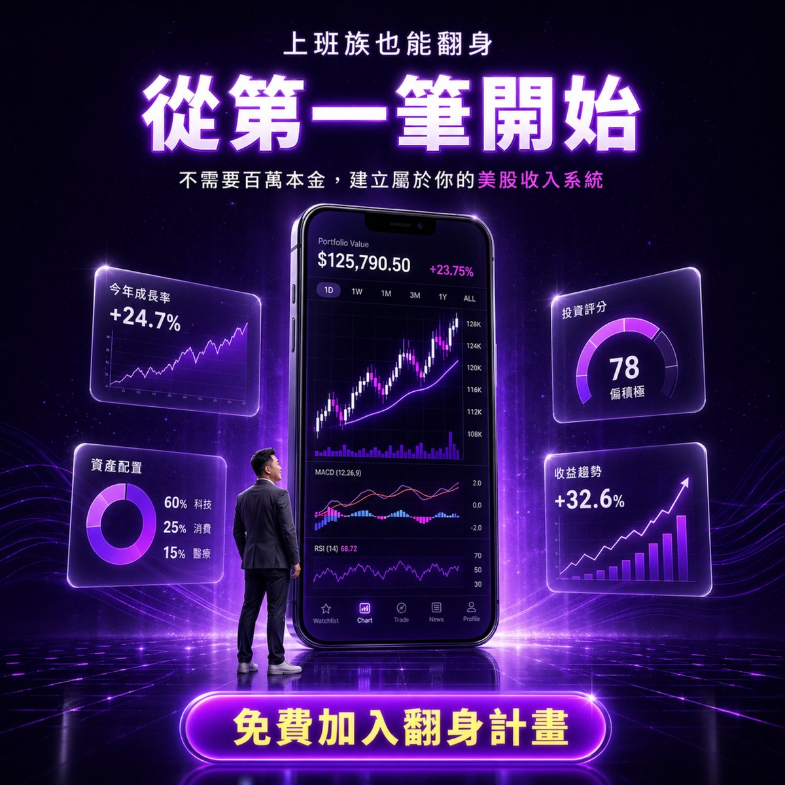

每次都一樣
同一套 prompt 反覆產圖，構圖、角度都相同，受眾很快就看膩，廣告素材疲勞。
Overview
團隊以四個 AI Agent 串起廣告閉環：Agent A 給內容、Agent B 生成圖片、Agent C 投放、Agent D 追蹤成效。我負責 Agent B 的生圖系統。
我用 Claude Code 製作 Prompt Skill，把團隊定義的五種 Persona 轉成 AI 能穩定執行的視覺規則與量化版面規範，讓 AI 每次自動產出的廣告圖都維持品牌一致，同時構圖不重複。
Context
團隊用四個 AI Agent 串起廣告從產出、投放到成效追蹤的閉環。我負責其中的 Agent B：把每個 Persona 轉成 AI 能穩定執行的視覺規則，自動產出廣告圖。
The problem
每次一樣會膩，每次亂變會走鐘。
同一套 prompt 反覆產圖，構圖、角度都相同，受眾很快就看膩，廣告素材疲勞。
放任 AI 自由發揮，色系、風格、文字大小每張都不同，品牌感直接走鐘。
The system
我把一張廣告圖拆成「不能變」「可以怎麼變」「怎麼變」三層，品牌一致性和視覺多樣性就不再互相衝突。
Layer 1
每個 Persona 一套固定規格：色系、背景公式、面板風格、是否使用作者照片、禁用色。
→ 確保品牌一致Layer 2
構圖、鏡頭角度、光線、面板數量與排列、人物姿勢、文字對齊、CTA 樣式等 9 個維度，每次各抽一個。
→ 確保視覺多樣Layer 3
Persona 的色系與文案必須保留；構圖、比例、場景每次都要變化，禁止重複同一套路，並從作者主視覺型、產品主視覺型等視覺架構中隨機選一種，最後輸出成 prompt。
→ 確保穩定可執行✦ 每次抽選結果回傳 Agent D 存檔，下次由 Agent A 帶入 previous_selections，構圖保證不重複。
Try it
選一個 Persona，按下「重新抽選構圖」，看看哪些元素固定、哪些每次都換。
Locked固定元素・不能變
Rolled本次抽選・可以變

Art direction
AI 最常犯的錯是字太小、元素貼邊、資料塞太滿，所以我把設計師的版面判斷寫成量化規則，每份 prompt 都必須帶上。

Results
同一個 Persona 色系風格一致，構圖每次不同。
Persona 1美股策略進階型
Persona 2財務翻身焦慮型
Persona 3家庭資產規劃型
Persona 4資訊過載學習型
Persona 5AI／成長機會追蹤型
Outcome
同 Persona 保持色系風格一致、構圖隨機，解決素材重複疲勞，又不破壞品牌感。